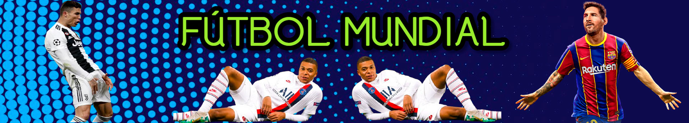

Fútbol Mundial

Inicio
Ranking Mundial de Selecciones
Ranking Mundial de Clubes
Ranking Mundial de Goleadores
Ranking Mundial de Entrenadores
G.Lapadula
Maradona QEPD
Cristiano Ronaldo
Messi
Francia Actual campeón Mundial
Terrible lesión hacia el defensor Colombiano
Real Madrid campeón de La Liga 19-20
Portugal actual campeón de la Eurocopa 2016
Brasil actual campeón de la Copa America
 Messi
Messi
Messi
Messi